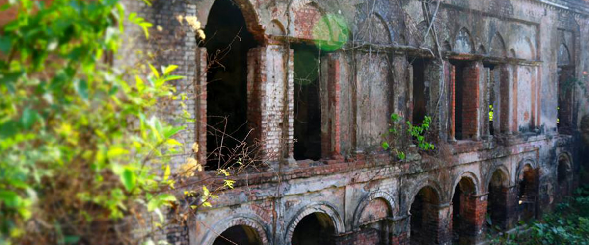
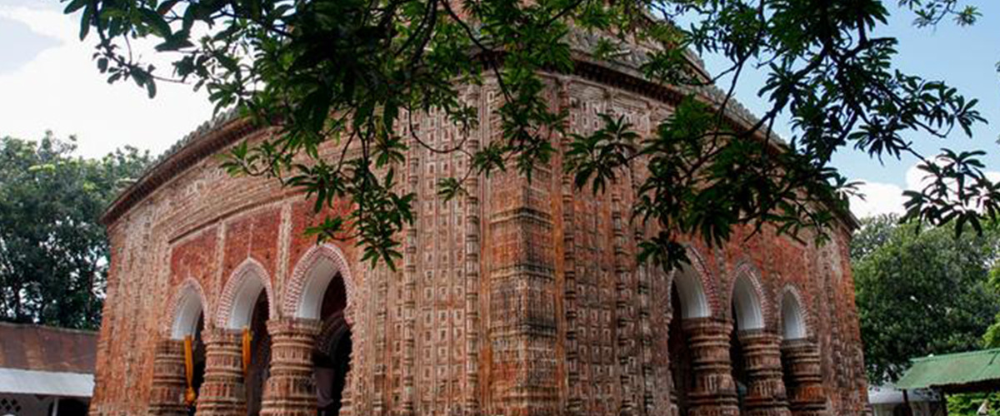

1 / 5
Ramshagor
2 / 5

Raj Bari
3 / 5

Kantojo Mondir
4 / 5
Lichu
5 / 5

Rice
প্রাচীনকালে অবস্থান ও সীমানা |
|---|
|
|
প্রাচীন যুগ |
|
দিনাজপুর একসময়ে পুণ্ড্রবর্ধনের অংশ ছিল। লক্ষ্ণৌতির রাজধানী দেবকোটের অবস্থান ছিল দিনাজপুর সদরের ১১ মাইল
দক্ষিণে। |
ব্রিটিশ শাসন |
|
১৭৬৫ সালে দেওয়ানি গ্রহণের ফলে দিনাজপুর জেলা ব্রিটিশ ইস্ট ইন্ডিয়া কোম্পানির নিয়ন্ত্রণভুক্ত হয়। ১৭৭২ সালে
দিনাজপুরে একজন ইংরেজ কালেক্টর নিয়োগ দেওয়া হয়। সেই সময় এই অঞ্চলের অরাজকতার কুখ্যাতি ছড়িয়ে পড়ে। ১৭৮৬ সালে
এখানে ইংরেজ শাসকদের “The British Administrative Control” গঠিত হয়। সেই সময় লক্ষ্ণৌতি, বাজিন্নাতাবাদ, তেজপুর,
পানজারা, ঘোড়াঘাট, বারবকাবাদ ও বাজুহা, এই ছয়টি সরকারের অংশ নিয়ে দিনাজপুর জেলা (তখনকার ঘোড়াঘাট জেলা) গঠিত
হয়। দিনাজপুর সদরে জেলা সদর গঠিত হয়।[২] ১৭৮৬ সালে ম্যারিয়ট নামে একজনকে কালেকটরের দায়িত্ব দেওয়া হয়। তার পর
রেড ফার্ণ ও ভ্যানসিটার্ট অল্প সময়ের জন্য দিনাজপুরের কালেকটর নিযুক্ত হন। পরবর্তী কালেকটর হ্যাচ জেলার বিচারের
কাজেও নিযুক্ত হন। সেই সময় জেলা প্রশাসনের সীমানা মালদা ও বগুড়ার দিকে অগ্রসর হয়। আঠারো শতকের শেষ দিকে
দিনাজপুরে নীল চাষ শুরু হয়।
|
সাম্প্রতিক ইতিহাস |
|
১৯৪৭ সালে দেশভাগের সময়ে দিনাজপুরের একটি বড় অংশ পশ্চিমবঙ্গে চলে যায় এবং তার নাম হয় পশ্চিম দিনাজপুর জেলা।
১৯৮৪ সালে দিনাজপুরের দুটি মহকুমা ঠাকুরগাঁও ও পঞ্চগড় পৃথক জেলায় পরিণত হয়।
|
মুক্তিযুদ্ধে অবদান |
| ১৯৭১ সালের মুক্তিযুদ্ধে দিনাজপুর ৬ ও ৭ নং সেক্টরের অধীনে ছিল। ৬ নং সেক্টরের আওতায় ছিল দিনাজপুরের ঠাকুরগাঁও
এবং দিনাজপুরের দক্ষিণাঞ্চল ছিল ৭ নং সেক্টরের আওতায়। ২৯ মার্চ ফুলবাড়ী উপজেলার দিনাজপুর রোডে পাকবাহিনীর সঙ্গে
মুক্তিযোদ্ধাদের লড়াইয়ে মুক্তিযোদ্ধারা পাকবাহিনীর কয়েকটি গাড়ি, গোলাবারুদ, অস্ত্রশস্ত্রসহ বহু রসদপত্র দখল করে।
৮ এপ্রিল পার্বতীপুর উপজেলার রামকৃষ্ণপুর, বাগবাড়ী ও পেয়াদাপাড়ায় পাকবাহিনী প্রায় ৩০০ লোককে নির্মমভাবে হত্যা
করে এবং ঘরবাড়ি পুড়িয়ে দেয়। ১৯ এপ্রিল পাকবাহিনী হাকিমপুর উপজেলার হিলি আক্রমণ করে। হাকিমপুর ছাতনীতে পাকবাহিনী
ও মুক্তিযোদ্ধাদের লড়াইয়ে ২ জন মুক্তিযোদ্ধা শহীদ হন। বিরামপুর উপজেলার কেটরা হাটে মুক্তিযোদ্ধা ও পাকবাহিনীর
লড়াইয়ে ৭ জন পাকসেনা নিহত এবং ১৬ জন মুক্তিযোদ্ধা শহীদ হন। ২০ জুলাই পাকসেনারা নবাবগঞ্জ উপজেলার খয়েরগনি গ্রামে
২১ জন নিরীহ লোককে নির্মমভাবে হত্যা করে। তারা ১০ অক্টোবর নবাবগঞ্জ উপজেলার চড়ারহাটে ১৫৭ জন নিরীহ লোককে হত্যা করে।
১৩ নভেম্বর পাকবাহিনী বিরল উপজেলার বিজোড় ইউনিয়নের বহলায় ৩৭ জন নিরীহ লোককে হত্যা করে। ২১ নভেম্বর-১১ ডিসেম্বর
হাকিমপুর উপজেলার বিভিন্ন স্থানে পাকবাহিনীর সঙ্গে মুক্তিযোদ্ধাদের লড়াইয়ে প্রায় ৩৪৫ জন মুক্তিযোদ্ধা শহীদ হন।
ডিসেম্বর মাসের প্রথম সপ্তাহে বীরগঞ্জ উপজেলার ভাতগাঁও ব্রিজের পূর্বপাড়ে মুক্তিযোদ্ধাদের আক্রমণে প্রায় ৫০ জন
পাকসেনা নিহত হয় এবং পাকবাহিনীর দুটি ট্যাংক ধ্বংস হয়। লড়াইয়ে কয়েকজন মুক্তিযোদ্ধা শহীদ হন। ৪ ডিসেম্বর সাধারন
জনগণ বিরামপুর উপজেলার বেপারীটোলায় একটি জীপ আক্রমণ করে কয়েকজন পাকসেনাকে হত্যা করে। ১৫ ডিসেম্বর বগুলাখারীতে
পাকবাহিনীর সঙ্গে মুক্তিযোদ্ধাদের লড়াইয়ে ৩০ জন মুক্তিযোদ্ধা শহীদ হন। এছাড়াও বিরল উপজেলার বহবল দীঘিতে
পাকবাহিনীর সঙ্গে মুক্তিযোদ্ধাদের লড়াইয়ে প্রায় ১০০ জন পাকসেনা নিহত হয়। কাহারোল উপজেলায় পাকবাহিনীর সঙ্গে
মুক্তিযোদ্ধাদের লড়াইয়ে ১০ জন পাকসেনা ও ৭ জন নিরীহ বাঙালি নিহত হয়।[৪] মুক্তিযুদ্ধের পর দিনাজপুরে ৪টি বধ্যভূমি
ও ৭টি গণকবর আবিষ্কৃত হয়। শহীদদের স্মরণে দিনাজপুর জেলায় মোট ৫টি স্মৃতিসৌধ নির্মিত হয়েছে।[৪]
|
প্রতিষ্ঠা ও নামকরণ |
|
দিনাজপুর জেলা ১৭৮৬ সালে প্রতিষ্ঠিত হয়। জনশ্রুতি আছে, জনৈক দিনাজ অথবা দিনারাজ দিনাজপুর রাজপরিবারের
প্রতিষ্ঠাতা। তার নামানুসারেই রাজবাড়িতে(রাজবাটী) অবস্থিত মৌজার নাম হয় "দিনাজপুর"। পরবর্তীতে ব্রিটিশ শাসকরা
ঘোড়াঘাট সরকার বাতিল করে নতুন জেলা গঠন করে এবং রাজার সম্মানে জেলার নামকরণ করে "দিনাজপুর"।
|
| ©2021,Lahad.All Rights Reserved.Dhaka,Bangladesh. |
|---|